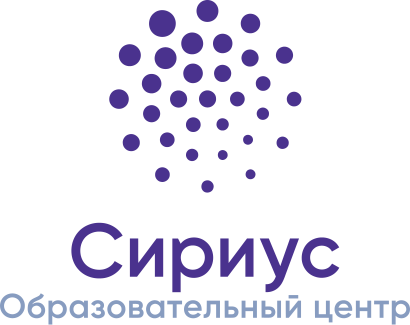

Региональные центры выявления, поддержки и развития способностей и талантов у детей и молодежи
Региональные центры выявления и поддержки одаренных детей, работающие по модели Образовательного центра «Сириус», создаются в соответствии с поручением Президента Российской Федерации. Их целью является организация системной работы с талантливыми детьми и молодежью в области науки, искусства и спорта